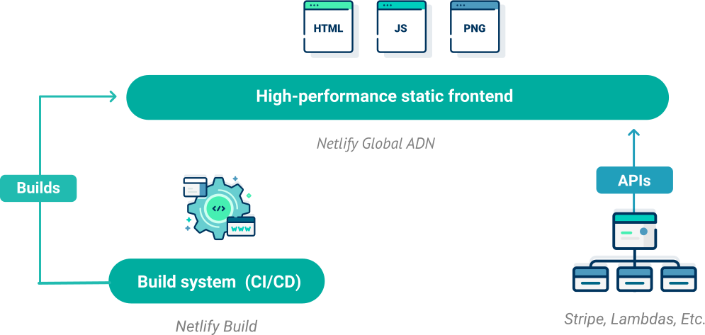
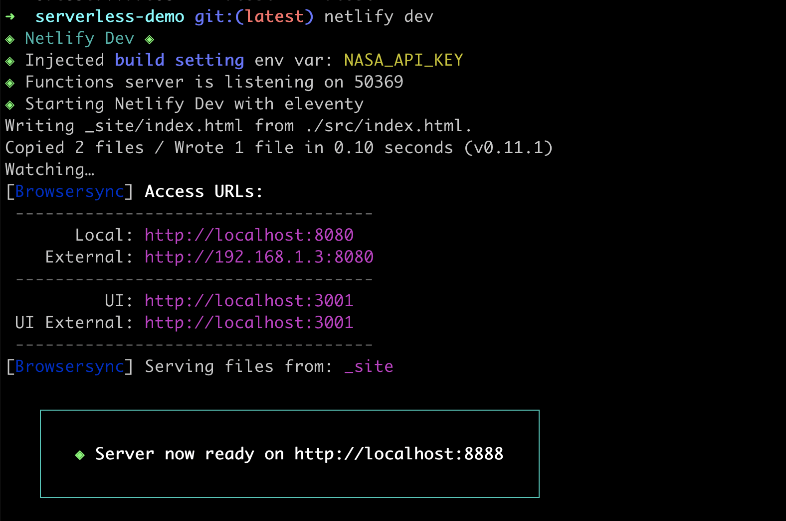

<!DOCTYPE html>
<html lang="en">
  <head>
    <meta charset="utf-8" />
    <meta name="viewport" content="width=device-width, initial-scale=1.0, maximum-scale=1.0, user-scalable=no" />

    <title>reveal-md</title>
    <link rel="stylesheet" href="./css/reveal.css" />
    <link rel="stylesheet" href="./_assets/style.css" id="theme" />
    <link rel="stylesheet" href="./css/highlight/github.css" />
    <link rel="stylesheet" href="./css/print/paper.css" type="text/css" media="print" />

  </head>
  <body>
    <div class="reveal">
      <div class="slides"><section  data-markdown><script type="text/template">

<!-- .slide: data-background="./images/akshar-dave-1GRvY9WUu08-unsplash.jpg" -->
<h1 class="title" style="text-align:left;">Serverless <span class="translucent">Functions +</span> Netlify</h1>
<h2 class="subtitle" style="color:#333;text-align:left;">Sia Karamalegos</h2>
</script></section><section  data-markdown><script type="text/template">
## hi, i'm sia

[sia.codes](https://sia.codes/)


</script></section><section  data-markdown><script type="text/template">
<!-- TODO: update -->
## [sia.codes/posts/webmentions-eleventy-talk/](https://sia.codes/posts/webmentions-eleventy-talk/)
</script></section><section  data-markdown><script type="text/template">
<!-- TODO: update -->
## Show + Tell

Webmentions are cool 😎

[sia.codes/posts/architecting-data-in-eleventy/](https://sia.codes/posts/architecting-data-in-eleventy/)

<aside class="notes"><p>Show site with webmentions at bottom. Point out that this isn&#39;t a commenting and liking system, and it&#39;s my own website. Most come from Twitter because of how I share, but also other websites. In this talk</p>
</aside></script></section><section  data-markdown><script type="text/template">
## Serverless Architecture

&nbsp;

<div class="align-left">
  <p class="fragment fade-in-then-semi-out"><span class="icons"><i class="fas fa-function"></i></span> Applications are broken up into individual functions </p>
  <p class="fragment fade-in-then-semi-out"><span class="icons"><i class="far fa-cloud-upload-alt"></i></span> Hosted by a 3rd party service </p>
  <p class="fragment fade-in-then-semi-out"><span class="icons"><i class="far fa-chart-line"></i></span> Can be invoked and scaled individually </p>
  <p class="fragment fade-in-then-semi-out"><span class="icons"><i class="far fa-server"></i></span> No need for server management by the developer</p>
</div>

&nbsp;

<small>[Serverless Architecture](https://www.twilio.com/docs/glossary/what-is-serverless-architecture)</small>
</script></section><section  data-markdown><script type="text/template">
<!-- .slide: data-background="./images/duotone-yell.jpg" class="dark-highlight-quote" -->

## Jamstack <!-- .element: class="dark-background" -->

> A modern web development architecture based on client-side JavaScript, reusable APIs, and prebuilt Markup <!-- .element: class="dark-background" -->

<small class="dark-background">— Mathias Biilmann (CEO & Co-founder of Netlify) [jamstack.wtf](https://jamstack.wtf/)</small>
</script></section><section  data-markdown><script type="text/template">


<small>[www.netlify.com/jamstack/](https://www.netlify.com/jamstack/)</small>

<aside class="notes"><p>Step 1 is to decouple the frontend from the backend. The APIs can be from many sources - like a CMS, Stripe, Square, Auth0, FaunaDB, Hasura Cloud, etc.</p>
</aside></script></section><section  data-markdown><script type="text/template">
## Prebuild static pages for speed

<div class="logo-grid">
  
  
  
  
  
  
</div>

<aside class="notes"><p>you can also use vanilla html, css, and javascript.</p>
</aside></script></section><section  data-markdown><script type="text/template">
<!-- TODO: explain what netlify does - maybe show a basic site like sia.codes -->
</script></section><section  data-markdown><script type="text/template">
<!-- .slide: data-background="./images/balloon-feet.jpg" -->

# Netlify CLI <!-- .element: style="color:#fff;" -->

<aside class="notes"><p>Netlify CLI lets us more easily build serverless functions in a dev environment and then port them to productions. We can also do other things like easily manage secrets between both environments.</p>
</aside></script></section><section  data-markdown><script type="text/template">
```
$ npm install netlify-cli -g
$ netlify
$ netlify login
```

<small>Create a Netlify account if you haven't yet - it's free!</small>

<aside class="notes"><p>install, learn about the command, then login which opens up web auth. Do the above and explain the commands we will use - init, deploy, login, functions, env, dev.</p>
<p><small><a href="https://docs.netlify.com/cli/get-started/">Get started with Netlify CLI</a></small></p>
</aside></script></section><section  data-markdown><script type="text/template">
```
Success! Netlify CLI has been installed!

Your device is now configured to use Netlify CLI to deploy and manage
your Netlify sites.

Next steps:

  netlify init     Connect or create a Netlify site from current
                   directory
  netlify deploy   Deploy the latest changes to your Netlify site

For more information on the CLI run netlify help
Or visit the docs at https://cli.netlify.com
```
</script></section><section  data-markdown><script type="text/template">
## Hello, Netlify!

1. **Fork** [the demo](https://github.com/siakaramalegos/serverless-netlify-demo) (don't clone!)
2. Clone **your** repo.
3. `cd serverless-netlify-demo`
4. `npm install`
5. `netlify init`

<small>Build command is `npm run build` and deploy directory is `_site`.</small>

<small>[bit.ly/yo-serverless](https://github.com/siakaramalegos/serverless-netlify-demo)</small>
</script></section><section  data-markdown><script type="text/template">
## Hello, Netlify!

Commit changes and push, then run `netlify open`.

# 🎉
</script></section><section  data-markdown><script type="text/template">
<!-- .slide: data-background="./images/bucography-r7eBv7pnP2E-unsplash.jpg" -->

# Environment<br> Variables <!-- .element: class="text-left color-secondary" -->
</script></section><section  data-markdown><script type="text/template">
## Keeping secrets secret 🕵🏻‍♀️

1. Get an API key at [api.nasa.gov/](https://api.nasa.gov/)
2. Run `netlify open` to go to the Netlify UI
3. Save as `NASA_API_KEY` in **Build & Deploy** > **Environment**
4. Run `netlify dev` to confirm it gets injected for local dev

<aside class="notes"><p>you can set some env vars in your netlify.toml, but don&#39;t put secret ones there as that file must be checked into git.</p>
</aside></script></section><section  data-markdown><script type="text/template">

</script></section><section  data-markdown><script type="text/template">
<!-- .slide: data-background="./images/duotone-babies.jpg" -->

# Serverless Functions <!-- .element: style="color:#fff;" -->
</script></section><section  data-markdown><script type="text/template">
## Netlify Functions

<div class="align-left">
  <p class="fragment fade-in-then-semi-out"><span class="icons"><i class="fab fa-aws"></i></span> Uses AWS serverless Lambda under the hood</p>
  <p class="fragment fade-in-then-semi-out"><span class="icons"><i class="far fa-code-merge"></i></span> Version-controlled, built, and deployed with your site</p>
  <p class="fragment fade-in-then-semi-out"><span class="icons"><i class="far fa-binoculars"></i></span> Automatic service discovery (for Deploy Previews and rollbacks)</p>
  <p class="fragment fade-in-then-semi-out"><span class="icons"><i class="fab fa-js"></i></span> JavaScript and Go both supported</p>
</div>

<small>[Netlify functions overview](https://docs.netlify.com/functions/overview/)</small>
</script></section><section  data-markdown><script type="text/template">
## netlify.toml

```toml
[build]
  command = "npm run build"
  publish = "_site"
  functions = "functions"
```

<small>[File-based configuration](https://docs.netlify.com/configure-builds/file-based-configuration/)</small>

<aside class="notes"><p>First, we need to tell Netlify where to look for our functions. This will now sync our settings and point to where the functions can be found in our project.</p>
</aside></script></section><section  data-markdown><script type="text/template">
<p class="text-left"><span class="icons"><i class="fas fa-pencil"></i></span> Write functions in <strong>/functions/hello.js</strong>.</p>
<p class="text-left"><span class="icons"><i class="far fa-code"></i></span> Access functions via <strong>/.netlify/functions/hello</strong>.</p>
</script></section><section  data-markdown><script type="text/template">
## functions/hello.js

```javascript
exports.handler = async function(event, context) {
  return {
    statusCode: 200,
    body: JSON.stringify({message: "Hello World"})
  };
}
```
</script></section><section  data-markdown><script type="text/template">
## src/index.html

```html
<!-- At bottom of file: -->
<script>
  fetch('/.netlify/functions/hello')
    .then(response => response.json())
    .then(json => console.log({json}))
__SCRIPT_END__
```

<aside class="notes"><p>restart netlify dev, then check console</p>
</aside></script></section><section  data-markdown><script type="text/template">
## What's in the `event` parameter?

```js
{
    "path": "Path parameter",
    "httpMethod": "Incoming request's method name"
    "headers": {Incoming request headers}
    "queryStringParameters": {query string parameters }
    "body": "A JSON string of the request payload."
    "isBase64Encoded": "A boolean flag to indicate if the applicable
      request payload is Base64-encode"
}
```
</script></section><section  data-markdown><script type="text/template">
<!-- .slide: data-background="./images/duotone-road.jpg" -->

# Bringing it all together <!-- .element: class="dark-background" -->
</script></section><section  data-markdown><script type="text/template">
```
$ npm install node-fetch --save
```

```javascript
// functions/apod.js
const fetch = require("node-fetch")
```

<aside class="notes"><p>Node does not have fetch available in its api so we need to install it.</p>
</aside></script></section><section  data-markdown><script type="text/template">
<!-- Add form id, create submit handler, add event listener to form, move fetch inside handler, e.preventdefault, check works -->
<!-- form data on target, method post body stringify date, in function get date from const {date} = JSON.parse(event.body) and send back, check works -->

<small>[FormData MDN docs](https://developer.mozilla.org/en-US/docs/Web/API/FormData), [Checking that fetch is successful](https://developer.mozilla.org/en-US/docs/Web/API/Fetch_API/Using_Fetch#Checking_that_the_fetch_was_successful), [`<template>` MDN docs](https://developer.mozilla.org/en-US/docs/Web/HTML/Element/template)</small>
</script></section><section  data-markdown><script type="text/template">

</script></section><section  data-markdown><script type="text/template">
<!-- .slide: data-background="./images/duotone-small-hiss.jpg" -->
# 🎉<!-- .element: style="font-size:4em;" -->
</script></section><section  data-markdown><script type="text/template">
<!-- .slide: data-background="./images/akshar-dave-1GRvY9WUu08-unsplash.jpg" -->
<h1 class="title" style="text-align:left;">Thanks!</h1>

<p style="color:#333;text-align:left;">Slides:<br> <a href="http://bit.ly/web-images-2020" class="link-secondary">bit.ly/web-images-2020</a></p>
<p style="color:#333;text-align:left;">Tutorial:<br> <a href="https://sia.codes/posts/webmentions-eleventy-in-depth/" class="link-secondary">sia.codes/posts/webmentions<br>-eleventy-in-depth/</a></p>
<p style="color:#333;text-align:left;">Writing, resources, and more:<br> <a href="https://sia.codes/" class="link-secondary">sia.codes</a></p>
</script></section><section  data-markdown><script type="text/template">
## Photo credits

- Road possum - Image by <a href="https://pixabay.com/users/csbonawitz-10920947/?utm_source=link-attribution&amp;utm_medium=referral&amp;utm_campaign=image&amp;utm_content=3861107">csbonawitz</a> from <a href="https://pixabay.com/?utm_source=link-attribution&amp;utm_medium=referral&amp;utm_campaign=image&amp;utm_content=3861107">Pixabay</a>
- Hissing possum - Image by <a href="https://pixabay.com/users/xandepontes-13842118/?utm_source=link-attribution&amp;utm_medium=referral&amp;utm_campaign=image&amp;utm_content=4787791">Alexandre Pontes Gomes xande</a> from <a href="https://pixabay.com/?utm_source=link-attribution&amp;utm_medium=referral&amp;utm_campaign=image&amp;utm_content=4787791">Pixabay</a>
- Snow possum - [University of Texas biodiversity blog](https://biodiversity.utexas.edu/news/entry/campus-biodiversity-awesome-opossums)
- Possum with babies - [Wikimedia Commons](https://commons.wikimedia.org/wiki/File:Didelphis_virginiana_with_young.JPG)
- Balloons <span>Photo by <a href="https://unsplash.com/@buco_balkanessi?utm_source=unsplash&amp;utm_medium=referral&amp;utm_content=creditCopyText">Bucography</a> on <a href="https://unsplash.com/?utm_source=unsplash&amp;utm_medium=referral&amp;utm_content=creditCopyText">Unsplash</a></span>
- Heart balloons <span>Photo by <a href="https://unsplash.com/@akshar_dave?utm_source=unsplash&amp;utm_medium=referral&amp;utm_content=creditCopyText">Akshar Dave</a> on <a href="https://unsplash.com/?utm_source=unsplash&amp;utm_medium=referral&amp;utm_content=creditCopyText">Unsplash</a></span>
- Balloon and feet dangling - <span>Photo by <a href="https://unsplash.com/@edrecestansberry?utm_source=unsplash&amp;utm_medium=referral&amp;utm_content=creditCopyText">Edrece Stansberry</a> on <a href="https://unsplash.com/?utm_source=unsplash&amp;utm_medium=referral&amp;utm_content=creditCopyText">Unsplash</a></span>
- Possum yelling [tweet](https://twitter.com/PossumEveryHour/status/1325951348291072000)   by [@PossumEveryHour](https://twitter.com/PossumEveryHour)
</script></section></div>
    </div>

    <script src="./js/reveal.js"></script>

    <script>
      function extend() {
        var target = {};
        for (var i = 0; i < arguments.length; i++) {
          var source = arguments[i];
          for (var key in source) {
            if (source.hasOwnProperty(key)) {
              target[key] = source[key];
            }
          }
        }
        return target;
      }

      // Optional libraries used to extend on reveal.js
      var deps = [
        { src: './plugin/markdown/marked.js', condition: function() { return !!document.querySelector('[data-markdown]'); } },
        { src: './plugin/markdown/markdown.js', condition: function() { return !!document.querySelector('[data-markdown]'); } },
        { src: './plugin/highlight/highlight.js', async: true, callback: function() { hljs.initHighlightingOnLoad(); } },
        { src: './plugin/zoom-js/zoom.js', async: true },
        { src: './plugin/notes/notes.js', async: true },
        { src: './plugin/math/math.js', async: true }
      ];

      // default options to init reveal.js
      var defaultOptions = {
        controls: true,
        progress: true,
        history: true,
        center: true,
        transition: 'default', // none/fade/slide/convex/concave/zoom
        dependencies: deps
      };

      // options from URL query string
      var queryOptions = Reveal.getQueryHash() || {};

      var options = extend(defaultOptions, {"transition":"none"}, queryOptions);
    </script>


    <script>
      Reveal.initialize(options);
    </script>
  </body>
</html>
